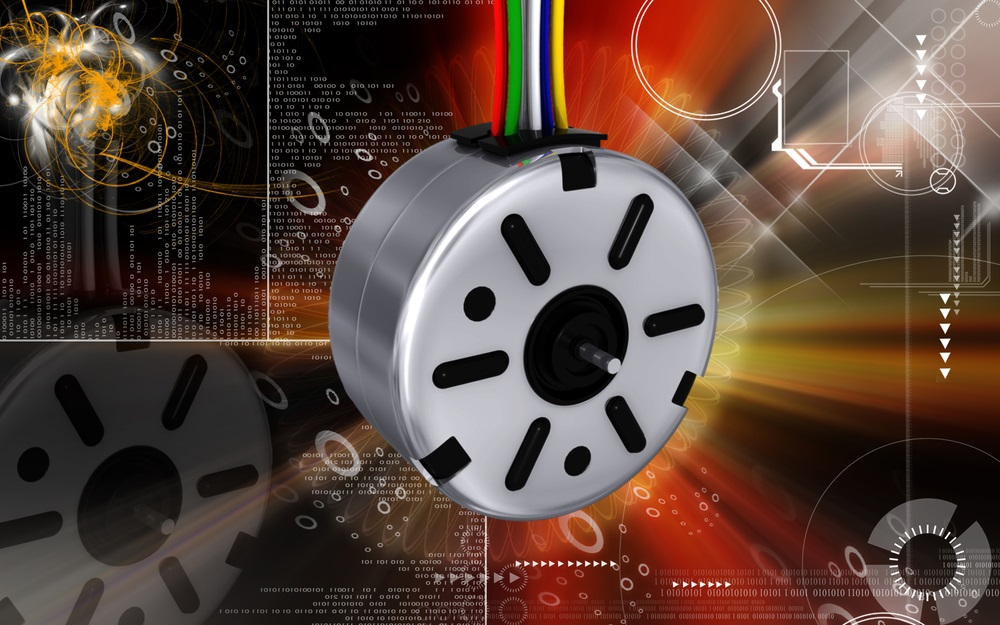

Engineering is a subject that involves complex machineries and most of them are found all over in our everyday lives.
But, there are of number of engineering students that would do not know how to make a motor like stepper motor run, if they will be handed one.
And, the significant reason behind this is the centuries long traditional educational methods. Thus, creating an increasing demand among educators to explore new methods of teaching stepper motor.
In this blog, we will explore five of such creative methods to teach stepper motor in the classroom.
Virtual Reality Simulations
Stepper motor is a complex machine that is being used in various engineering processes. However, because of 2D pictures of its complex structure in the textbooks, the traditional teaching methods often fall short to make students understand about the machine effectively.
Though lectures, tutorials, and textbooks are informative in nature, educators often struggle to convey the intricacies of these sophisticated machines through this approach.
By breaking this barrier of traditional learning methods, VR engineering with its immersive simulations provide an experiential understanding of the inner workings of a stepper motor.
Unlike static representations, VR moves students into a three-dimensional space that replicates the environment.
Within this virtual environment, they can closely look at the structure and working of different parts of Stepper motor, allowing them to navigate through the complexities and nuances of this crucial aviation component.
VR simulations allow the students to gain the ability to manipulate individual components of the motor. From adjusting parameters to dismantling and reassembling the motor, they are actively involved in the learning process.
The immersive nature of VR allows them to observe the motor in action, seeing firsthand how each component contributes to the overall functionality.
Benefits-
Improved comprehension of complex mechanisms.
Enhanced retention through experiential learning.
Real-world problem-solving skills development.
Interactive 3D Models

Traditional educational methods that are being used to educate students often rely on 2D, static diagrams to convey complex concepts, but these can present challenges for students grappling with intricate engineering details of stepper motor.
So what can be done in this scenario?
To bring the stepper motor to life in a virtual space, educators can develop comprehensive VR modules. These immersive modules will make it possible for the students to interact with a virtual stepper motor 3d model.
They can disassemble and reassemble its components with a simple gesture.
Impressive. Isn’t it?
Yes, it feels like a scene from a science fiction movie. But, this is possible.
VR’s hands-on approach encourages students to explore each part in detail, facilitating a profound understanding of the motor's structure and functionality.
In this virtual environment, students can manipulate the motor's components in real-time, rotate and inspect individual parts, and witness how each element contributes to the overall functionality of the motor.
The VR module should be designed with user-friendly interfaces, making it accessible to students with varying levels of technological proficiency.
Benefits-
Visual and tactile learning for better understanding.
Increased student engagement and motivation.
Reinforcement of spatial awareness and component interrelationships.
Gamification
Playing games is one of the most interesting way to learn in education, particularly when educators have to teach engineering through modern technology.
Asking why?
Well, it is because it adds an element of competition and excitement into the learning process.
When applied to stepper motors’ study, a subject that may seem dry at first, gamification can turn the educational experience into an engaging challenge, capturing the interest and enthusiasm of students.
But how to implement gamification in education while teaching complex topics like Scramjet engine, petrol engine, and stepper motor?
To bring the stepper motor to life through gamification, the educators need to design a captivating VR game that takes students on a virtual journey of troubleshooting and repairing malfunctioning motors.
For this, you can create a set within a realistic aviation environment, the game should challenge students to apply their theoretical knowledge to practical scenarios.
Ans, to cater to different learning stages, you can possibly introduce varying levels of difficulty, creating a dynamic experience that evolves with the students' growing expertise.
This not only ensures inclusivity but also fosters healthy competition among students, motivating them to excel in their understanding and problem-solving skills.
Through these virtual games, students will be able to go through a series of challenges, diagnosing issues, and implementing solutions within a specified time frame.
Benefits-
Increased motivation and engagement.
Application of theoretical knowledge in practical scenarios.
Development of problem-solving and critical thinking skills.
Virtual Tours
When it comes to professional education like that of engineering, gaining theoretical knowledge alone is insufficient. There is a need that students gain experience of the practical applications of the theoretical principles.
Traditionally this concept has been limited because of the risks, safety concerns, time and availability, other factors. However, the things are different with virtual reality engineering.
Virtual industrial visit within virtual reality world provides a firsthand look at the real-world implementation of stepper motors.
For the implementation of virtual reality tours in engineering education the educators can collaborate with aviation industry partners.
By forging partnerships, educational institutions can access exclusive content, creating VR tours of manufacturing plants, maintenance hangars, and operational aircraft.
Through these virtual excursions, students can delve into aviation facilities, gaining unprecedented insights into how motors are integrated into complex aviation systems.
Benefits-
Bridging the gap between theory and practice.
Exposure to industry standards and best practices.
Inspiration for future career paths in aviation engineering.
Collaborative Learning Environments
In engineering domain, innovation often stems from collective efforts, promoting teamwork and collaboration. Well, this collaboration is an option instead, it is a necessity. Perhaps, traditional classroom setup retrsicts the students to learn collaboratively.
Now VR has a solution for this.
Be it VR for electrical engineering or VR for mechanical engineering, the immersive technology of virtual reality has became a platform for collaborative learning.
The motor team projects, powered by VR, offer an unparalleled opportunity for students to synthesize their understanding and skills in a collaborative setting.
To bring this collaborative learning environment to life, educators can make use of VR’s capabilities to create an immersive platform tailored for stepper motor-related projects.
This platform should serve as a virtual space where students can seamlessly collaborate on the design, analysis, and presentation of stepper motor projects.
Benefits-
Enhanced communication and teamwork skills.
Exposure to diverse perspectives and approaches.
Preparation for collaborative work environments in the engineering field.
Conclusion
To conclude, the integration of virtual reality in engineering education has resulted in a creative approach to teaching and learning stepper motor.
All the above stated creative ways are going to make learning enjoyable. As we look into the future possibilities of VR education in engineering domain, we pave the way for a new era of engineers who are not only well-versed in theory but also equipped with practical, hands-on experience.
The turbofan stepper motor may be complex, but with VR, the path to mastery has become more exciting and accessible than ever before.
So, ready for this innovative idea?
%20(1).png)